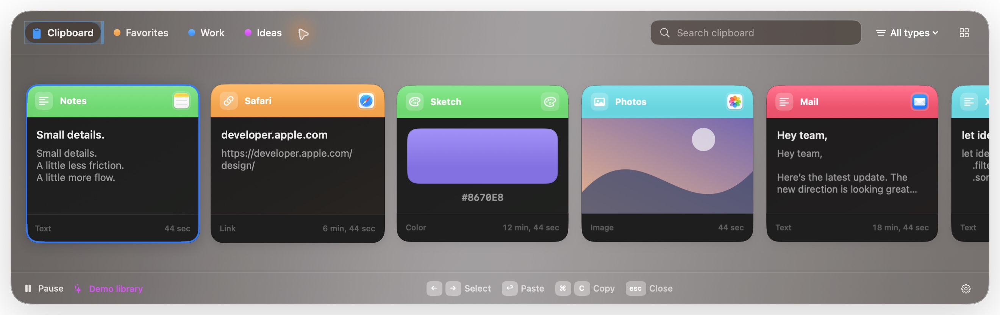
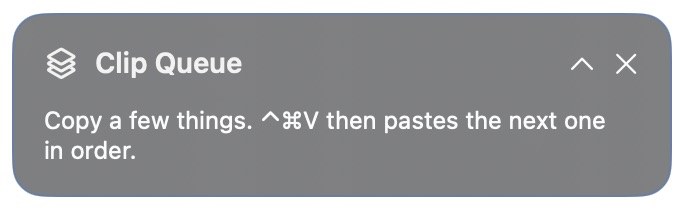

See what you copied
Text, links, colors, images, PDFs, rich text, and Finder files appear together in a visual shelf.
⌘⇧V to openNative to your Mac
Pastrix keeps what you copy close at hand. Find it, organize it, or line it up to paste—with history stored locally by default.
Early public preview · Apple Silicon · macOS 14+


Keep your train of thought
Pastrix turns the clipboard from a one-item dead end into a calm, searchable workspace.
Text, links, colors, images, PDFs, rich text, and Finder files appear together in a visual shelf.
⌘⇧V to openSearch content, source app, or type. Give each pinboard a colored icon, then drag clips onto it. Select a group to organize several at once. Undo brings them back.
Start a queue, copy a few things, then paste each one in order. Reverse, remove, or clear at any time.
⌃⌘V for Paste NextPause capture, exclude apps, set history limits, and clear unpinned clips whenever you choose.
Your Mac, your dataA queue for repetitive work
Start a session from the menu bar. Each new, unique copy joins the queue. Then move through it with Paste Next—or use ordinary ⌘V after granting Accessibility.
The queue lasts for the current session. Ending it restores ordinary paste and leaves unpasted clips available on the shelf.
Private by design
No telemetry or advertising. The public preview keeps history in a local SQLite database readable by your macOS account. Encrypted Mac-to-Mac pinboard sync requires a separately provisioned build and live verification. Read the sync setup guide.
Update checks contact GitHub only when you ask. Feedback can save a local draft or open GitHub’s issue form; Pastrix does not upload the draft or attach clipboard history.
One honest detail: Pastrix does not separately encrypt its database. Use FileVault to protect data at rest, keep exported JSON backups private, and exclude sensitive apps when needed.
Get started
Stay on the keyboard
Open source for the Mac
Download the early preview, or help make Pastrix better on GitHub.